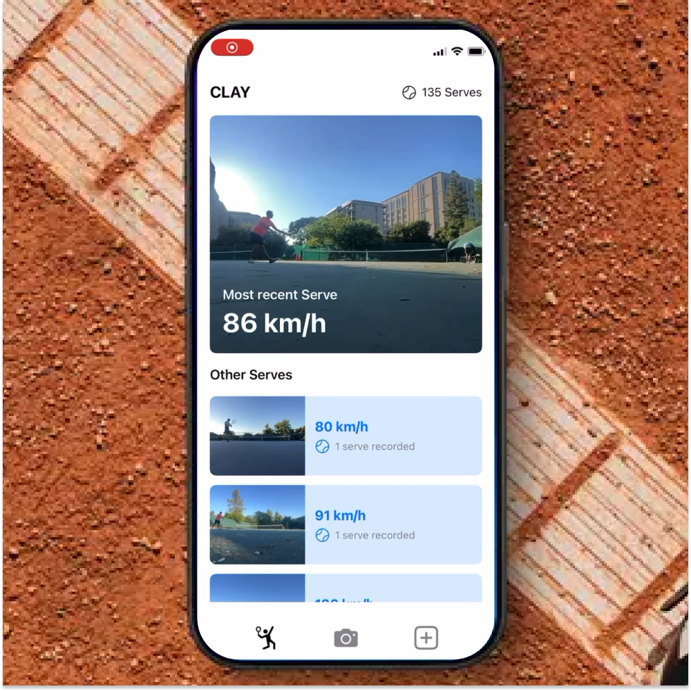

Tennis AI Coach
Swift · Vision · VNHumanBodyPoseObservation · ML
- Detects peak wrist position during serve; temporal smoothing for robust maxima
- On-device feedback loop; near-real-time overlay and coaching cues
- Improved precision over naive single-frame peak by X–Y% (placeholder metric)